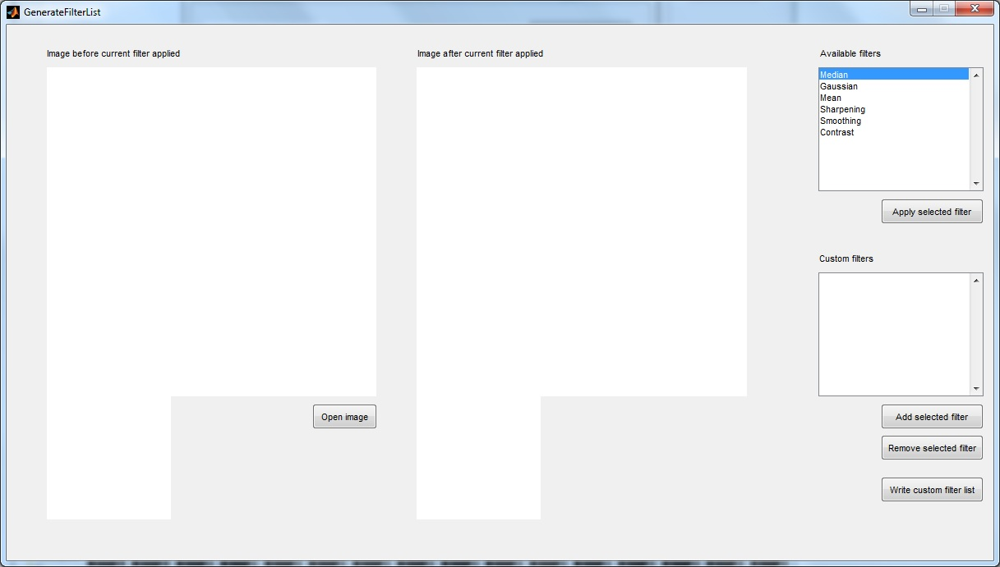
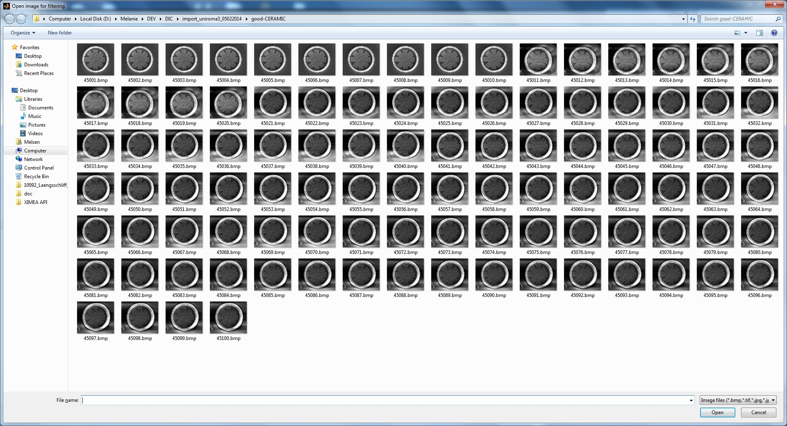
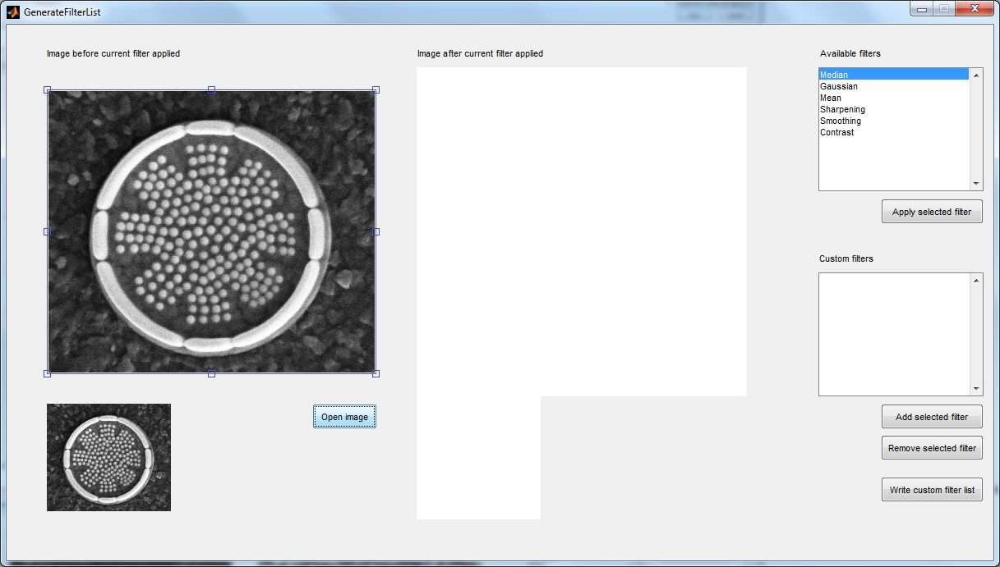
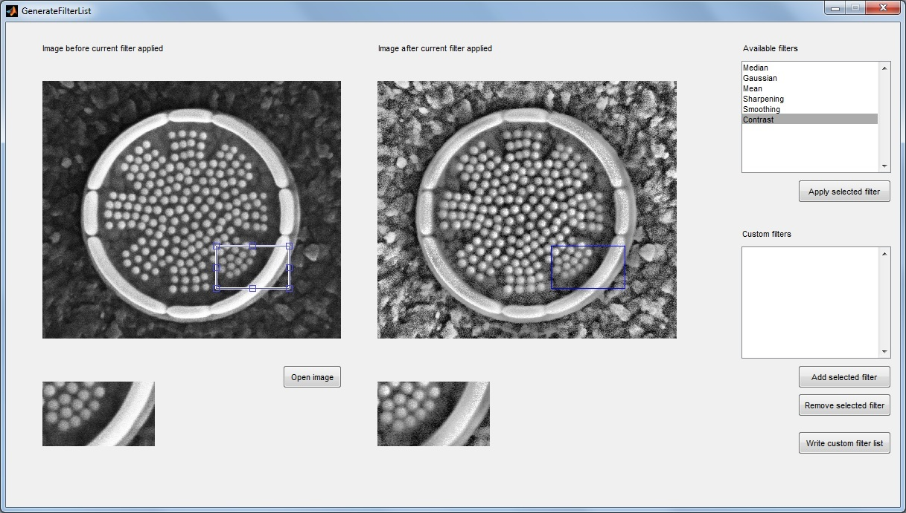

A filter list can be generated by the user by choosing filters and finally writing the custom filter list to the file 'CustomFilter.cfg' that is used by 'ProcessCorrelations.m' to calculate correlations. If the user does not run the filter tool ('GenerateFilterList.m'), an empty filter list will be created. Experienced users might edit 'CustomFilter.cfg' directly.
Click the button 'Generate filter list' in the main gui or type 'GenerateFilterList;' at the MATLAB command line and press 'ENTER'. The following window should appear:

Open the image that you would like to use for testing the available filters by clicking on 'Open image'.

Now you can use the filter tool.

You can select a filter from the list of available filters on the right and test it by hitting 'Apply selected filter'. For zooming into a selected region of interest, you can adjust the blue rectangle in the left image with the mouse.

You can add the selected filter from the list of available filters to the list of custom filters by hitting 'Add selected filter'. If you want to remove a filter from the list of custom filters, hit 'Remove selected filter' after selecting it.
If you are finished with generating the custom filter list, click on 'Write custom filter list' and the file 'CustomFilter.cfg' is written.